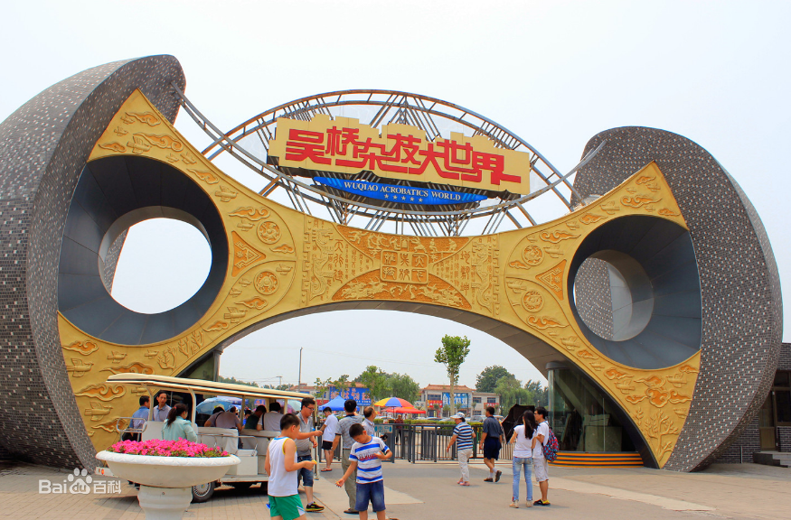

吴桥杂技大世界
沧州旅游网网
吴桥杂技大世，是国家4A级旅游景区，吴桥县位于河北省东南部，是我国杂技发祥地之一，被国内外杂技界公认为中国杂技之乡。1993年，吴桥县政府与香港国旅合资兴建了“吴桥杂技大世界”，把杂技艺术作为一项独有的旅游资源加以开发利用。大世界占地200公顷，集游乐、人文、博物、民俗、杂技培训、比赛交流于一体，具有神奇、绝妙、新颖、独特的民族文化特色，展现了杂技之乡古老的民间文化风采，成为独树一帜的世界东方杂技旅游胜地。
景区先后投资1000余万元，包装推出了"江湖八大怪"、"鬼手居"、"吹破天剧场"、"杂技小院"等民俗旅游品牌，倍受海内外广大游客的青睐。2000年杂技大世界率先步入国家"首批4A级旅游景区"的行列；相继被中宣部评为"全国精神文明建设工作先进单位"和"全国文明单位"、国家文化出口重点企业。
吴桥杂技大世界历经15年开发，现已形成以京沪沿线及京、津、冀、鲁四省市为客源市场主体的市场格局，年接待游客60万人以上，国外游客达5万，截止2014年12月，已成为中国最大的民俗旅游景区和世界唯一的杂技主题公园。
主要景点：
- 江湖文化城
- 魔术迷幻宫红
- 红牡丹剧场
- 马戏游乐园
- 吴桥杂技博物馆
- 滑稽动物园
- 红牡丹宾馆

王宝合
5岁学艺，7岁登台，擅长表演：三仙归洞、口中吃针引线、软功缩骨，人送绰号“快手王”。“三仙归洞”的表演者是吴桥杂技大世界“江湖八大怪”之首的老艺术家王宝合。2002年他应邀到香港演出，被香港特别行政区行政长官董建华誉为“鬼手”。
请写下您得意见